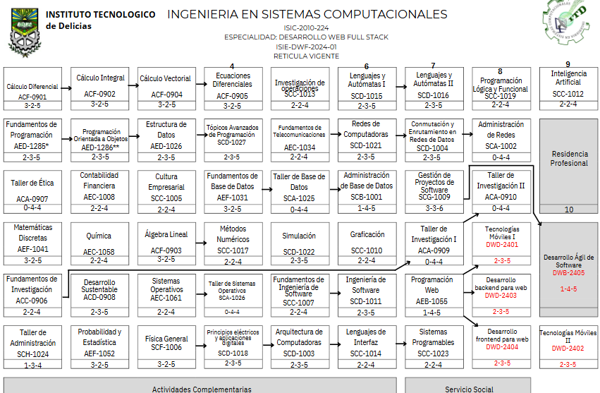

El costo para la inscripciones es de 750 pesos pudiendo solicitar las fichas el 15 de febrero al 20 de junio del 2025
EL examen de admision se realizaria el dia 23 y 24 de junio del 2025
El costo por semetre es de alrededor de 2800 pesos por semestre dependenidno de la carrera y la cifra puede variar un poco, la duracion de la carrera en el caso de sistemas en el plantel del tec de delicias es de 9 semestres, lo que daria un resultado de 25 200 pesos por los 9 semestres de la carrera.
abria que tomar en tomar en cuenta tambien el uso de materiales como cuadrnos, libros, formularios, utiles varios, etc. En la carrera de sistemas se llevan por lo menos 5 materias por lo menos por 7 semestres, lo que daria un apoximado de 1050 pesos en cuadrnos buenos, costos desconocidos por libros, cerca de 400 pesos en materiales varios.
La cuenta actual seria 900 por inscripcion, 2800 por costo del semestre y por lo menos 1500 pesos en materiao escolar. Lo que daria un total de 5200 pesos como costo inicial de la carrera.
La siguiente imagen se vera la reticula de materiales que se van a ver en la carrera de sistemas
